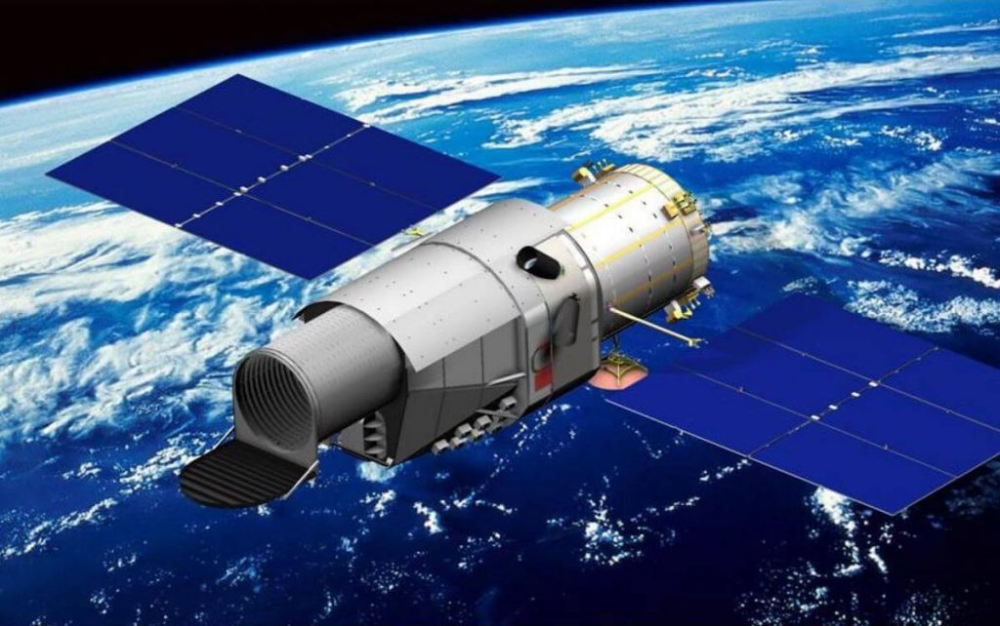
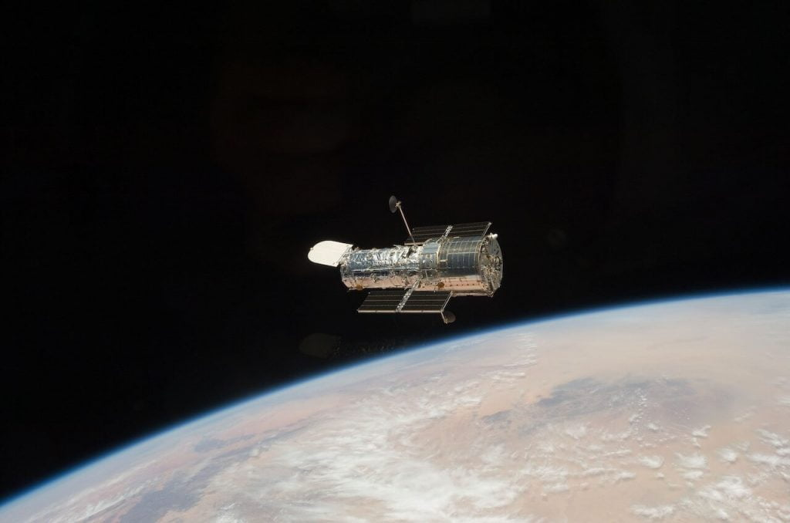

ဒီ တယ်လီ စကုပ် ကြီးဟာ စကြာဝဠာ ရဲ့ ဆင့်ကဲ ဖြစ်စဉ် နဲ့ ပါတ်သက်တဲ့ အထောက် အထားတွေ ရှာဖွေနိုင်ဖို့ ရည်ရွယ်သလို အမှောင်ဒြပ် (Dark Matter) နဲ့ အမှောင် စွမ်းအင် (Dark Energy) တို့ကိုလဲ ရှာဖွေဖို့ ရည်ရွယ် ထားတယ်လို့ တရုတ် နိုင်ငံပိုင် သတင်း ဌာနတွေရဲ့ ထုတ်ပြန်ချက် အရ သိရပါတယ်။
ဒီ တယ်လီစကုပ် ကြီးရဲ့ တရားဝင် အမည်က “တရုတ် အာကာသ စခန်း တယ်လီစကုပ် (Chinese Space Station Telescope CSST) ဖြစ်ပါတယ်။ မန်ဒရင် စကား နဲ့တော့ ရှင်းတျန်း (Xuntian) လို့ အမည် ပေးထားပါတယ်။ အဓိပ္ပါယ် က “ကောင်းကင်ဘုံ လေ့လာရေး (survey to heavens)” လို့ အမည် ရပါတယ်။
ဒီ တယ်လီ စကုပ်ကြီးကို ကမ္ဘာပတ် လမ်းကြောင်း ထဲကို လွှတ်တင်မှာ ဖြစ်ပြီး စကြာဝဠာ ရဲ့ မြေပုံ အသစ် ရေးဆွဲနိုင်ဖို့ ရည်ရွယ်တယ် လို့ ဆိုပါတယ်။
ဒါပေမယ့် ဒီ တယ်လီ စကုပ် ကြီးဟာ အမေရိကန် နာဆာ ရဲ့ လတ်တလော လွှတ်တင် လိုက်တဲ့ ဂျိမ်းစ်ဝက်ဘ် (James Webb Telescope) တယ်လီစကုပ် ကြီးကို ယှဉ်နိုင် ပါ့မလား။
ဆက်စပ်ဆောင်းပါး – စကြာဝဠာရဲ့ မူလအစကို ရှာဖွေပေးမယ့် James Webb တယ်လီစကုပ်ကြီး

ရှင်းကျန်း တယ်လီစကုပ်ရဲ့ မြင်ကွင်းဟာ ဟတ်ဘယ်ထက် အဆ ၃၅၀ ပိုကျယ်တယ်
ရှင်းကျန်း မှန်ပြောင်း ကြီးဟာ အရှည် အားဖြင့် ၃ ထပ်တိုက် တစ်လုံး နီးပါး ရှည်ပါတယ်။ သူ့ရဲ့ မှန်ဘီလူး အကျယ်ကလဲ ၂ မီတာလောက် ကျယ်ပါတယ်။ ဒီ မှန်ဘီလူး အကျယ်ဟာ ဟတ်ဘယ် တယ်လီစကုပ် (Hubble Space Telescope) နဲ့ ယှဉ်ရင်တော့ အနည်းငယ် သေးနေပါတယ်။ ဒါပေမယ့် သူ့ အတွင်းပိုင်း တည်ဆောက်ပုံ ကြောင့်မို့ ရှင်းကျန်း တယ်လီစကုပ် ရဲ့ မြင်ကွင်း အကျယ်က ဟတ်ဘယ်ထက် အဆ ၃၅၀ လောက် ပိုပြီး ကျယ်တယ်လို့ ဆိုပါတယ်။မြင်ကွင်း အကျယ် (field of view) ဆိုတာက တယ်လီစကုပ် တစ်လုံးကနေ တစ်ချိန်တည်း တပြိုင်တည်းမှာ ကောင်းကင်ရဲ့ အကျယ်အဝန်း ဧရိယာ ဘယ်လောက် ကျယ်ကျယ် မြင်ရလဲ ဆိုတာကို ပြောတာ ဖြစ်ပါတယ်။
ဟတ်ဘယ် တယ်လီ စကုပ်ကြီးရဲ့ မြင်ကွင်း အကျယ်က လူကြီး တစ်ရောက် လက်မထောင်ပြီး လက်တစ်ဆုံး ဆန့်ထားတဲ့ အခါ မြင်ရတဲ့ လက်သဲခွံ ဧရိယာ ရဲ့ အပုံ ၁၀၀ ပုံ ၁ ပုံ ပဲ ရှိပါတယ်။ ဒီတော့ ဟတ်ဘယ် တယ်လီစကုပ်ကြီး အနေနဲ့ ကောင်းကင် တစ်ပြင်လုံးကို လွှမ်းခြုံ ကြည့်နိုင်ဖို့ ဆိုတာက ဘယ်လိုမှ မဖြစ်နိုင် ပါဘူး။
ဒါ့ကြောင့်လဲ James Webb တယ်လီစကုပ် ကြီးကို လွှတ်တင်ခဲ့တဲ့ အကြောင်း တစ်ခု ဖြစ်ပါတယ်။
ရှင်းကျန်း တယ်လီ စကုပ် ကြီးမှာ အလင်းပြန် မှန် ၃ ချပ် တပ်ဆင် ထားပါတယ်။ ဒီ နည်းစနစ်ကို အသုံးပြုပြီး ပိုမို ကျယ်ပြန့်တဲ့ ကောင်းကင်ကို လေ့လာနိုင်မှာ ဖြစ်တဲ့ အပြင် အသေးစိတ် တဲ့ high quality ဓါတ်ပုံတွေလဲ ရရှိ နိုင်မှာ ဖြစ်ပါတယ်။
ဒါ့အပြင် တရုတ် နိုင်ငံပိုင် သတင်း ဌာနတွေရဲ့ ထုတ်ပြန်ချက် အရ ရှင်းကျန်း တယ်လီ စကုပ်ကြီးဟာ ကြယ်တွေ၊ ဂလက်ဆီ တွေရဲ့ အချက်အလက် တွေကို တိုင်းတာရာ မှာလဲပိုပြီး တိတ်ိ ကျကျ တိုင်းတာ နိုင်မယ်လို့ ဆိုပါတယ်။
ဒါဆို ဒီ အချက်တွေက ဂျိမ်းစ်ဝက်ဘ် တယ်လီစကုပ် ကြီးထက် သာပြီလို့ ပြောနိုင် ပြီလား။
ဂျမ်းစ်ဝက်ဘ် ရဲ့ မြင်ကွင်းဟာ တကယ်တော့ မသေး လှပါဘူး။ ဂျိမ်းစ်ဝက်ဘ် ဟာ ကောင်းကင်ပြင် ဧရိယာ ရဲ့ ၃၉ ရာခိုင်နှုန်း ကို ၂၄ နာရီ အတွင်းမှာ လေ့လာ နိုင်စွမ်း ရှိပါတယ်။ ကောင်းကင် ပြင် တစ်ခုလုံး ၁၀၀ ရာခိုင်နှုန်းကို ၆ လ ကာလ အတွင်းမှာ လေ့လာနိုင်မယ်လို့ နာဆာရဲ့ ထုတ်ပြန်ချက် အရ သိရပါတယ်။

James Webb နဲ့ Xuntian (CSST) တယ်လီစကုပ်တွေဟာ အခြေခံ မတူညီပါဘူး
ဂျ်မ်းစ် ဝက်ဘ် ရဲ့ ကြည်လင် ပြတ်သားမှု (Angular resolution) ဟာ ဟတ်ဘယ်လ် တယ်လီစကုပ် နဲ့ အတူတူ လောက်ပါပဲ။ စာရွက် ပေါ်မှာတော့ ဒီ ကြည်လင် ပြတ်သား မှုဟာ တရုတ် တို့ရဲ့ ရှင်းကျန်း တယ်လီ စကုပ်လောက် မကောင်း ပါဘူး။ဒါပေမယ့် ဂျိမ်းစ်ဝက်ဘ် မှာ အခြား တယ်လီ စကုပ်တွေနဲ့ မတူညီတဲ့ အားသာချက် ရှိနေပါတယ်။ အခြား တယ်လီ စကုပ် တွေဟာ အလင်းရောင် ကို ဖမ်းယူကြတာ မို့ အလင်း ဖြတ်သန်း လာရတဲ့ ကြားခံ နယ်မှာ ရှိတဲ့ ဓါတ်ငွေ့တွေ၊ ဖုန်မှုန့် တွေ ကြောင့် ရလာတဲ့ ပုံရိပ်ရဲ့ ကြည်လင် ပြတ်သားမှု ကျဆင်း သွားရပါတယ်။ ဒါ့ကြောင့်လဲ အလင်း တယ်လီ စကုပ်တွေဟာ အရမ်းဝေးတဲ့ အရပ်မှာ ရှိတဲ့ စကြာဝဠာ ကနဦး က ဂလက်ဆီ တွေကို မြင်နိုင်ဖို့ မလွယ်ကူ လှပါဘူး။
ဂျိမ်စ် ဝက်ဘ် မှာ အဓိက တပ်ဆင်ထားတဲ့ အာရုံခံ ကိရိယာ တွေဟာ ကြယ်တွေက လာတဲ့ အင်ဖရာရက် အနီအောက် ရောင်ခြည် လှိုင်းတွေကို ဖမ်းယူနိုင်အောင် တည်ဆောက် ထားတာ ဖြစ်ပါတယ်။ အထူး သဖြင့် အနီအောက် ရောင်ခြည် လှိုင်းစဉ်ရဲ့ အလယ်ပိုင်း (mid-infrared) ရောင်စဉ်တွေကို ဖမ်းယူနိုင်အောင် အထူး တည်ဆောက် ထားပါတယ်။
ဒီ အနီအောက် ရောင်ခြည် လှိုင်းစဉ်ဟာ ဖုန်မှုန့်တွေ ဓါတ်ငွေ့ တိမ်တိုက်တွေကြား အနှောက်အယှက် မရှိပဲ ဖြတ်ကျော် လာနိုင် ပါတယ်။ ဒါ့ကြောင့် ဂျိမ်းစ်ဝက်ဘ် တယ်လီ စကုပ်ဟာ အလွန် ဝေးကွာတဲ့ အရပ်က အစောပိုင်း ဂလက်ဆီ တွေ မွေးဖွားပုံကို လေ့လာဖို့ အလွန် အသုံး ဝင်ပါတယ်။
ဆက်စပ်ဆောင်းပါး – James Webb ရဲ့ ကြည်လင် ပြတ်သားသော ပုံရိပ် နာဆာန်

ဂျိမ်းစ်ဝက်ဘ် တယ်လီစကုပ် ကြီးကတော့ အပေါ်မှာ ပြောခဲ့ သလို စကြာဝဠာ အစောပိုင်း ကာလ တွေကို အသေးစိတ် လေ့လာနိုင်မှာ ဖြစ်ပါတယ်။ တနည်းအားဖြင့် Big Bang မဟာ ပေါက်ကွဲမှု ကြီး အပြီး ကာလတွေကို လေ့လာမှာ ဖြစ်ပါတယ်။
ဂျိမ်းစ်ဝက်ဘ် တယ်လီ စကုပ်ရော တရုတ်တို့ရဲ့ CSST တယ်လီ စကုပ်ရော နှစ်ခု လုံးဟာ အလွန် အဆင့်မြင့်ပြီး စွမ်းဆောင်ရည် ကောင်းတဲ့ တယ်လီစကုပ် ကြီးတွေ ဖြစ်ကြပါတယ်။ ဒီ တယ်လီ စကုပ်ကြီး နှစ်ခုဟာ သူတို့ အထူးပြု လေ့လာမယ့် နယ်ပယ် မတူညီပဲ ကွဲပြား နေတာမို့ ပြိုင်ဖက်တွေ မဟုတ်ပဲ တစ်ခုနဲ့ တစ်ခု အပြန်အလှန် အထောက် အကူ ပြုမယ့် တယ်လီစကုပ် ကြီးတွေ ဖြစ်ကြကြောင်း တင်ပြအပ်ပါတယ်။
— မောင်သက်နိုင် —
Ref: Can China’s new Xuntian Space Telescope rival NASA’s Webb? | Interesting Engineering